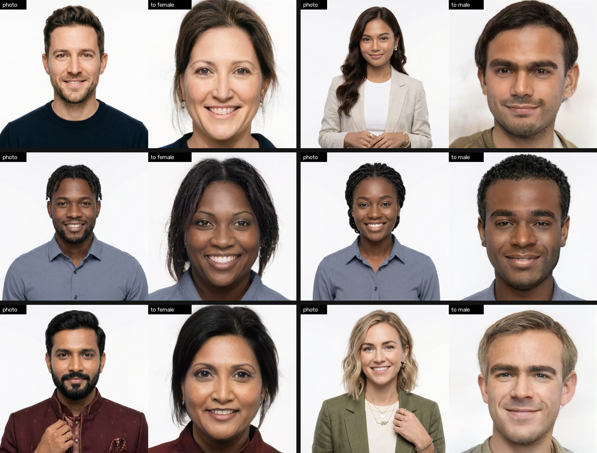

What it looks like
Each pair: the photo and its swapped face frame, at Balanced quality. Every face is an AI-generated person who doesn't exist. Click to enlarge.

Use it
- Python 3.9 - 3.12; an NVIDIA GPU (4 GB is enough).
- Start
run.bat(orrun.ps1,run.sh). The first run sets itself up and fetches the models (about 1.3 GB). - Open photo, check the direction it picked, press Swap, then Save.
The window
| Swap | Auto, To female, To male (picked for you from the face) |
| Strength | how far the swap goes |
| Result | the face frame (default), the whole photo, or the photo with its own hair |
| Quality | Fast (seconds), Balanced and Best (learn your face first) |
Without the window
run.bat photo.jpg --to female --quality best (add --whole-photo or --keep-hair)